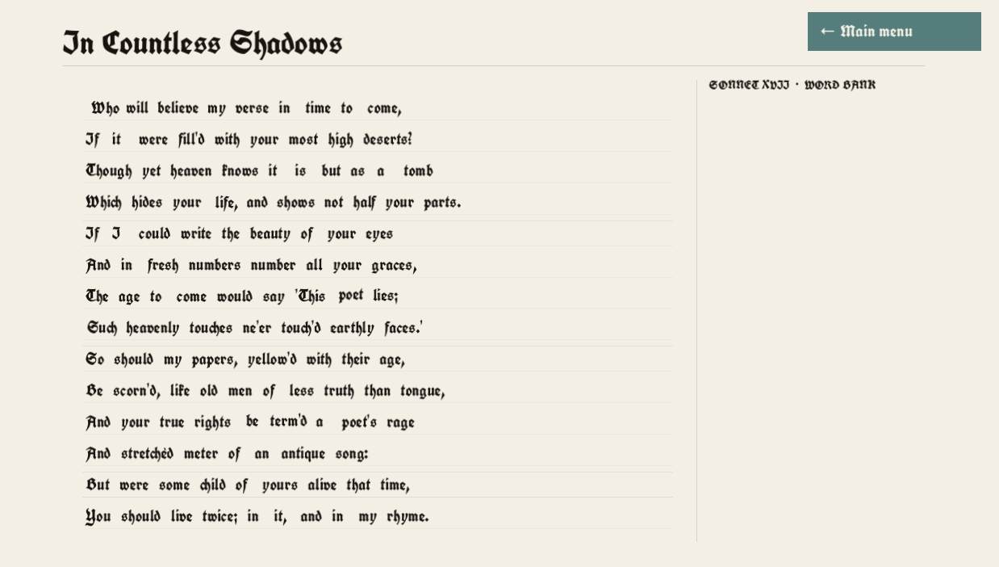

In Countless Shadows

In Countless Shadows is an experimental poetry game that makes the sonnet form playable. It treats sonnets as engines of poetic possibility, allowing players to manipulate language and explore the relationships between rhyme, meter, and meaning. Shakespeare’s Sonnet 17 is one example through which these systems are being developed.
First shown at Game Poems, a session of the Computational Poetry Reading Group at tiat.
In active development in Godot.